- Patrón específico y distribución antes de pedir una batería analítica.
- Contexto: diabetes, tiroides, riñón, autoinmunidad, fármacos y sol.
- Órgano: debilidad, disnea, disfagia, nefritis o síntomas neurológicos priorizan.
No conviertas cada hallazgo en un síndrome paraneoplásico
La mayoría de las dermatosis son primarias de piel. Eleva la probabilidad de enfermedad sistémica cuando el patrón es específico, aparece de forma brusca o extensa, se acompaña de síntomas constitucionales/órgano o no encaja con diagnósticos frecuentes.
Color y adjetivos como “raro” no bastan: identifica pápula, placa, púrpura, esclerosis, úlcera, ampolla o prurito sin lesión primaria.
Pretibial, nudillos, párpados, malar, periungueal, fotoexpuesta, pliegues o acral.
Debilidad proximal, Raynaud, disfagia, disnea, artritis, fiebre, pérdida de peso, poliuria, coluria o cambios urinarios.
Una hipótesis concreta define analítica, biopsia y derivación; evita paneles autoinmunes o tumorales sin contexto.
| Nivel | Contexto | Conducta |
|---|---|---|
| Asociación débil | Hallazgo frecuente, estable y aislado: xerosis, acrocordones, una placa típica de granuloma anular. | Trata la dermatosis y revisa factores habituales; no solicites baterías por asociación teórica. |
| Asociación plausible | Patrón característico más síntoma o antecedente coherente: acantosis con obesidad, prurito sin lesión con colestasis, livedo con fármaco. | Analítica dirigida, revisión farmacológica y seguimiento con una hipótesis explícita. |
| Patrón específico | Heliotropo + Gottron, esclerodactilia + Raynaud, ampollas dorsales + fragilidad/milia, púrpura palpable. | Confirma con pruebas de órgano, biopsia o laboratorio especializado y coordina derivación. |
| Daño de órgano | Debilidad rápida, disfagia, disnea, orina patológica, isquemia, necrosis dolorosa, fiebre o pérdida ponderal. | Prioriza el circuito sistémico; no esperes a completar anticuerpos ni a que Dermatología confirme la etiqueta. |
La piel orienta el estudio; no reemplaza el control de la enfermedad
La diabetes favorece infección, mala cicatrización y neuropatía, pero muchas lesiones asociadas no correlacionan con glucemia puntual. La enfermedad renal o hepática puede presentarse como prurito sin lesión primaria.
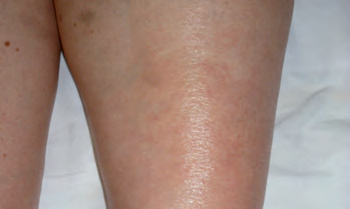
Engrosamiento en “piel de naranja” asociado a enfermedad de Graves; no es edema común.
Recopilación Dermatología 2025 · pág. 78.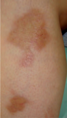
Centro atrófico amarillento y telangiectasias; protege de traumatismo y valora diabetes, sin asumir que siempre existe.
Recopilación Dermatología 2025 · pág. 79.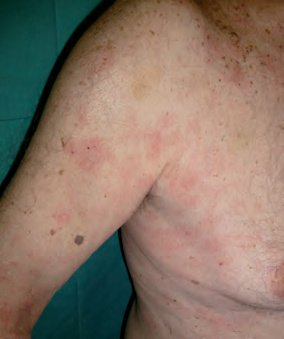
Predominan xerosis y lesiones secundarias; la intensidad no se deduce de la fotografía.
Recopilación Dermatología 2025 · pág. 81.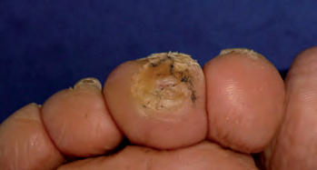
El callo periférico sugiere presión repetida; la profundidad, perfusión, sensibilidad e infección no se gradúan con la foto.
Recopilación Dermatología 2025 · pág. 79.| Hallazgo | Asociación que considerar | Qué hacer |
|---|---|---|
| Acanthosis nigricans | Resistencia a insulina, obesidad, fármacos; rara vez neoplasia si comienzo explosivo, extenso y atípico. | Glucemia/HbA1c y contexto metabólico; ampliar solo si fenotipo paraneoplásico plausible. |
| Prurito generalizado sin lesión | Renal, colestasis, hierro, tiroides, hematológica, fármacos o xerosis. | Hemograma/ferritina, renal-hepática, TSH y estudio por síntomas; revisar la guía de prurito. |
| Úlcera neuropática | Diabetes y pérdida de sensibilidad protectora. | Descarga, valoración vascular/neurológica, infección y circuito de pie diabético. |
| Mixedema pretibial | Autoinmunidad tiroidea, típicamente Graves. | Función tiroidea y coordinación con Endocrino; tratar la lesión según impacto. |
Tiroides: signos que suman, no una analítica por cada piel seca
- Hipotiroidismo: piel fría y seca, edema no depresible, pelo quebradizo, pérdida de cola de ceja, macroglosia y síntomas metabólicos.
- Hipertiroidismo: piel caliente y húmeda, pelo fino, onicólisis distal y síntomas adrenérgicos; Graves puede añadir dermopatía pretibial y oftalmopatía.
- Solicita TSH y completa según el resultado cuando el conjunto clínico lo justifique; el mixedema pretibial puede evolucionar de forma independiente al control hormonal.
- Alopecia en placas, lesión atípica o falta de respuesta exige descartar una dermatosis coexistente, no atribuir todo a tiroides.
Diabetes: separar marcador, herida e infección
- Acantosis, dermopatía diabética o necrobiosis orientan, pero no miden el control glucémico de ese día.
- En toda úlcera retira calzado y vendaje, explora pulsos, temperatura, sensibilidad protectora, profundidad, exudado y eritema; descarga la presión desde el inicio.
- No diagnostiques infección solo por cultivo superficial: manda la clínica y, si hace falta, una muestra tisular profunda tras limpieza.
- Isquemia, necrosis, infección profunda, afectación ósea o deterioro general activan circuito urgente de pie diabético.
Prurito sin lesión y ampollas dorsales siguen circuitos distintos
En enfermedad renal o colestásica, la piel suele mostrar xerosis y rascado, no una erupción diagnóstica. En cambio, fragilidad y ampollas poco inflamatorias en dorso de manos con milia o cicatriz obligan a pensar en porfiria cutánea.
| Patrón | Estudio dirigido | Clave práctica |
|---|---|---|
| Prurito + xerosis | Función renal/hepática, hemograma, hierro, TSH y revisión farmacológica según contexto. | Trata barrera y causa; los antihistamínicos suelen ayudar poco si no hay componente histaminérgico. |
| Púrpura palpable | Hemograma, renal, orina, inflamación; serologías/complemento/crioglobulinas según clínica. | Hematuria, proteinuria, dolor abdominal, neuropatía o fiebre convierten una vasculitis cutánea en problema sistémico. |
| Ampollas dorsales frágiles | Porfirinas en plasma, orina y heces mediante laboratorio experto; no basta con biopsia. | Busca PCT, porfiria variegata/coproporfiria y pseudoporfiria antes de etiquetar. |
| Nódulo/placa retiforme muy dolorosa | Calcio-fósforo, función renal, fármacos y valoración multidisciplinar. | En ERC, obesidad o anticoagulación, la necrosis dolorosa puede ser calcifilaxia y requiere actuación prioritaria. |
Porfiria cutánea tarda: qué confirma el diagnóstico
- Fragilidad, erosiones y ampollas poco inflamatorias en manos/antebrazos fotoexpuestos; curan lentamente con milia y cicatriz. Puede haber hipertricosis facial, hiperpigmentación y orina oscura.
- Solicita patrón de porfirinas en un laboratorio acreditado; una biopsia puede apoyar una ampolla subepidérmica, pero no tipifica la porfiria.
- Completa hemograma, perfil hepático, ferritina/saturación de transferrina, VHC, VIH y estudio HFE según protocolo; revisa alcohol, tabaco, estrógenos y diálisis.
- Coordina con unidad experta: venesecciones o hidroxicloroquina a dosis específicas no deben iniciarse como tratamiento dermatológico empírico.
Fotoprotección especial en PCT
- La luz que activa porfirinas incluye UVA larga y visible; un fotoprotector convencional centrado en UVB puede no ser suficiente.
- Prioriza guantes, manga larga, sombrero y protección física opaca; algunos filtros minerales/tintados amplían cobertura.
- Protege la piel frágil de roces y conserva el techo de las ampollas al drenarlas en condiciones estériles si es necesario.
- Trata desencadenantes y hepatopatía; la mejoría cutánea es lenta y requiere seguimiento bioquímico, no solo visual.
Dolor intenso y necrosis en enfermedad renal
La calcifilaxia suele doler mucho antes de que la úlcera parezca extensa. No la manejes como una «herida crónica» aislada: coordina Nefrología, Dermatología, control del dolor, herida y desencadenantes sin demorar por una biopsia insegura o no disponible.
Párpados y nudillos pueden contar la misma historia muscular
Heliotropo, pápulas de Gottron y eritema en escote/dorso de manos orientan a dermatomiositis. El eritema malar de lupus suele respetar surcos nasolabiales; rosácea, dermatitis seborreica y fototoxicidad son imitadores frecuentes.
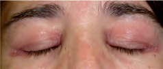
Pregunta por debilidad proximal, disfagia, disnea y fármacos.
Recopilación Dermatología 2025 · pág. 82.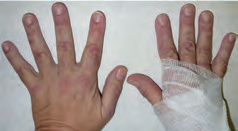
Lesiones sobre articulaciones metacarpofalángicas e interfalángicas, no en los espacios.
Recopilación Dermatología 2025 · pág. 82.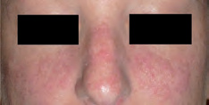
La fotografía orienta; fotosensibilidad, úlceras, artritis, citopenias y riñón definen el contexto.
Recopilación Dermatología 2025 · pág. 82.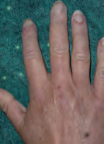
Piel distal tensa en un patrón de esclerosis sistémica; pregunta por Raynaud, úlceras, reflujo, disnea y presión arterial.
Recopilación Dermatología 2025 · pág. 82.Si sospechas dermatomiositis
- Objetiva fuerza proximal: levantarse de silla sin brazos, subir un escalón, peinarse o mantener los brazos elevados.
- Solicita CK, transaminasas, LDH/aldolasa según disponibilidad, hemograma, renal y orina; una CK normal no excluye forma amiopática ni toda dermatomiositis.
- Pregunta activamente por tos/disnea, disfagia, voz nasal, aspiración, palpitaciones y Raynaud; músculo, pulmón y deglución pueden ser más relevantes que la erupción.
- Deriva de forma preferente a Reumatología/Medicina Interna/Dermatología para autoanticuerpos, imagen/electromiografía y tratamiento coordinado.
Si sospechas lupus cutáneo/sistémico
- Hemograma, función renal, sedimento y cociente proteína/creatinina; ANA como puerta de entrada solo si la clínica lo apoya.
- Anti-dsDNA, complemento y anticuerpos específicos se interpretan según patrón y probabilidad previa, no como cribado de cansancio inespecífico.
- Biopsia de una lesión activa y no tratada puede separar lupus de rosácea, dermatitis seborreica, psoriasis o infiltrado linfocítico.
- Artritis, citopenias, serositis, síntomas neurológicos o alteración urinaria activan valoración sistémica.
Esclerosis sistémica: la mano abre la exploración
- Raynaud de inicio adulto, dedos hinchados, esclerodactilia, telangiectasias, úlceras digitales, calcinosis y capilares periungueales anómalos forman el patrón.
- Mide presión arterial y pregunta por reflujo/disfagia, tos/disnea, palpitaciones, pérdida de peso e intolerancia al ejercicio.
- ANA y autoanticuerpos específicos, capilaroscopia y estudio cardiopulmonar pertenecen al circuito coordinado; no retrases derivación por esperar todos los resultados.
- Isquemia digital, nueva hipertensión con deterioro renal o disnea progresiva son problemas prioritarios.
Cribado de cáncer en dermatomiositis: por riesgo
- Mantén siempre los programas poblacionales adecuados a edad y sexo; añade historia y exploración completas.
- El consenso IMACS estratifica por subtipo, edad, autoanticuerpos y clínica. Anti-TIF1γ, edad mayor, disfagia, actividad persistente o necrosis cutánea elevan riesgo.
- No solicites una batería uniforme de marcadores tumorales desde AP: el equipo especialista decide cribado básico o ampliado y su frecuencia.
- El periodo de mayor asociación se concentra alrededor del inicio de la miopatía, por lo que el seguimiento planificado importa.
Órgano antes que etiqueta
Disfagia, debilidad rápidamente progresiva, disnea, hematuria/proteinuria, síntomas neurológicos, isquemia digital o fiebre con vasculitis requieren valoración prioritaria. La consulta no debe demorarse esperando un panel completo de anticuerpos.
Una dermatosis asociada no equivale a una dermatosis paraneoplásica
La velocidad de aparición, el síndrome constitucional, la mucosa, el hemograma y los síntomas de órgano pesan más que memorizar listas. Sweet y pioderma gangrenoso pueden asociarse a enfermedad inflamatoria, fármacos o neoplasia hematológica, pero muchos casos no son tumorales.
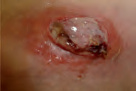
Dolor, progresión y borde socavado orientan; infección, vasculitis y tumor ulcerado deben excluirse. No diagnosticar por la foto aislada.
Recopilación Dermatología 2025 · pág. 82.Pioderma gangrenoso: evita agrandar el problema
- Úlcera muy dolorosa de progresión rápida, borde violáceo socavado y pústula inicial; puede aparecer tras traumatismo o procedimiento por patergia.
- Toma cultivos y biopsia del borde para excluir infección, vasculitis y neoplasia; la histología apoya pero no es patognomónica.
- Pregunta por enfermedad inflamatoria intestinal, artritis, gammapatía y enfermedad hematológica.
- Evita desbridamiento agresivo repetido mientras sea una posibilidad razonable; coordina Dermatología y cura atraumática.
| Patrón | Contexto que aumenta la señal | Siguiente paso |
|---|---|---|
| Sweet | Placas eritematoedematosas dolorosas + fiebre/neutrofilia, recidiva o hemograma anormal. | Biopsia, hemograma y búsqueda dirigida de fármaco, inflamación, infección o neoplasia hematológica. |
| Acanthosis extensa de inicio brusco | Paciente sin fenotipo metabólico, afectación mucosa/palmar, prurito intenso o pérdida de peso. | Historia/exploración completas y cribado orientado por edad y síntomas; no marcadores tumorales indiscriminados. |
| Mucositis grave + erupción polimorfa/ampollas | Estomatitis refractaria, conjuntiva o genital, adenopatías o alteración hematológica. | Biopsia e inmunofluorescencia; descartar pénfigo paraneoplásico y enfermedad linfoproliferativa. |
| Prurito generalizado persistente | Sin lesión primaria, síntomas B, adenopatías, colestasis, ferropenia o hemograma alterado. | Estudio escalonado por hallazgos; el prurito aislado rara vez justifica TAC o panel tumoral de entrada. |
Busca la frontera y también las zonas de sombra
Frente, nariz, pómulos, escote, nuca y dorso de manos reciben luz. Párpado superior, región submentoniana, retroauricular, pliegues y zona bajo reloj/ropa pueden quedar respetados y dibujar el diagnóstico.
Habón fugaz inmediato frente a eritema tipo quemadura tras suficiente dosis de fármaco/sustancia y luz.
Pápulas/eczema pruriginoso tras exposición, con latencia y posible extensión más allá del área iluminada.
Gotas, líneas o huellas tras cítricos/plantas y UVA; puede dejar hiperpigmentación intensa.
Placas anulares, atrofia, cicatriz, fragilidad o ampollas dorsales requieren estudio específico.
Fototóxica parece quemadura; fotoalérgica parece eczema
La fototoxicidad no necesita sensibilización y queda en el área expuesta. La fotoalergia es una hipersensibilidad retardada, pruriginosa y eczematosa que puede extenderse. Suspender un fármaco esencial exige valorar alternativa y causalidad, no actuar solo por una lista.
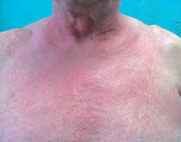
Aspecto de quemadura y frontera exacta con la ropa.
Recopilación Dermatología 2025 · pág. 118.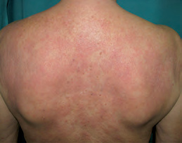
La morfología eczematosa orienta, pero fotografía y fármaco aislados no demuestran causalidad; la cronología y el estudio especializado completan el diagnóstico.
Recopilación Dermatología 2025 · pág. 118.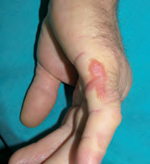
La geometría irregular refleja contacto con sustancia vegetal y posterior UVA.
Recopilación Dermatología 2025 · pág. 118.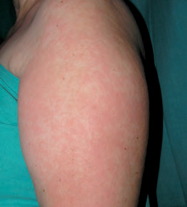
Brote primaveral pruriginoso con morfología consistente en cada paciente.
Recopilación Dermatología 2025 · pág. 119.| Proceso | Latencia y patrón | Conducta |
|---|---|---|
| Fototoxicidad | Minutos–horas; eritema/ampolla tipo quemadura limitado a fotoexposición. | Retirar o sustituir el agente si es seguro, evitar luz, curas y corticoide tópico según inflamación. |
| Fotoalergia | 24–72 h; eczema pruriginoso, puede desbordar el área iluminada. | Revisar tópicos y sistémicos; fotoparche especializado si persiste. |
| Erupción polimorfa lumínica | Horas–días en primavera/inicio de verano; pápulas pruriginosas, suele respetar cara/manos habituadas. | Fotoprotección UVA/UVB; corticoide tópico en brote; fototerapia preventiva si grave. |
| Urticaria solar | Habones en minutos y resolución en horas. | Confirmación con fototest si limita; antihistamínico no sedante y estrategia especializada. |
Historia farmacológica que sí sirve
- Relaciona fecha de inicio, aumento de dosis, primera exposición intensa y mejoría al proteger; incluye cremas, perfumes, plantas y suplementos.
- Doxiciclina, amiodarona, tiazidas, algunos AINE, quinolonas y voriconazol son ejemplos, no una lista diagnóstica. Confirma el medicamento concreto en CIMA.
- Pregunta por conducción o trabajo junto a ventana: UVA atraviesa el cristal habitual, mientras UVB se bloquea en gran medida.
- No retires un tratamiento imprescindible sin valorar gravedad, alternativa y medidas de protección con quien lo prescribió.
Fitofotodermatosis: una quemadura química por luz
- Contacto con cítricos, apio, perejil, hinojo, ruda o higuera seguido de UVA; no requiere alergia previa.
- Ardor, eritema o ampolla aparecen habitualmente en 24–48 horas con gotas, dedos, líneas o salpicaduras.
- Lava el área, evita nueva luz, usa curas y antiinflamatorio tópico según intensidad; drena una ampolla grande conservando techo.
- La hiperpigmentación geométrica puede persistir semanas o meses y ser la única pista cuando consulta tarde.
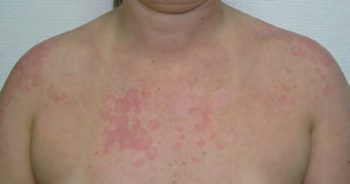
Habones a los pocos minutos de luz y desaparición en horas; una foto del móvil puede documentar lo que ya no está en consulta.
Recopilación Dermatología 2025 · pág. 120.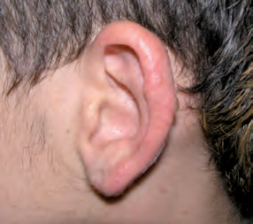
Variante de erupción polimorfa lumínica en el borde auricular, típica tras primeras exposiciones primaverales.
Recopilación Dermatología 2025 · pág. 119.Erupción polimorfa lumínica
- Cada persona suele repetir su propia morfología, aunque entre pacientes sea muy variable; aparece en piel cubierta durante el invierno y suele respetar cara/manos «endurecidas».
- Remite en días sin cicatriz si no hay nueva exposición. Si deja cicatriz, dura demasiado, afecta sistémicamente o no sigue un patrón lumínico, reconsidera lupus o porfiria.
- La clínica típica puede manejarse en AP; fototest/fotoprovocación y fototerapia de endurecimiento corresponden a casos intensos, atípicos o incapacitantes.
- Evita recomendar «tomar el sol para acostumbrarse» sin plan: la exposición gradual solo es razonable en casos leves y controlados.
Urticaria solar
- Habones, picor o ardor en minutos; resuelven habitualmente en pocas horas y no dejan cicatriz.
- UVA y luz visible son desencadenantes frecuentes: ropa fina, ventana o día nublado no siempre protegen.
- Antihistamínico no sedante y evitación adaptada son base; el fototest define espectro y umbral si condiciona la vida.
- Exposición extensa con disnea, mareo, hipotensión o síntomas generales es una excepción que requiere atención inmediata.
La cicatriz separa formas que requieren distinta vigilancia
El lupus cutáneo subagudo suele ser anular o psoriasiforme, muy fotosensible y no cicatricial. El discoide forma placas con escama adherente, atrofia, tapones foliculares y cicatriz, incluida alopecia permanente.
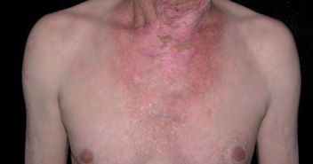
Anillos y policiclos fotoexpuestos; revisa anti-Ro y fármacos capaces de inducirlo.
Recopilación Dermatología 2025 · pág. 121.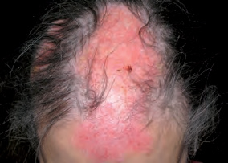
La cicatriz en cuero cabelludo destruye folículos: requiere diagnóstico y tratamiento precoces.
Recopilación Dermatología 2025 · pág. 121.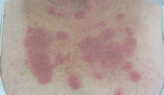
Placas lisas e infiltradas sin cicatriz ni escama prominente; urticaria, infiltrado linfocítico y erupción polimorfa son imitadores.
Recopilación Dermatología 2025 · pág. 121.| Forma | Morfología | Qué cambia |
|---|---|---|
| Agudo | Eritema malar o exantema fotoexpuesto transitorio, sin cicatriz. | Mayor asociación con actividad sistémica: explora riñón, sangre, articulación, serosas y neurología. |
| Subagudo | Placas anulares/policíclicas o psoriasiformes en tronco y brazos fotoexpuestos, sin cicatriz. | Anti-Ro frecuente; revisa fármacos capaces de inducir el patrón y síntomas sistémicos. |
| Discoide | Placa con escama adherente, tapones foliculares, atrofia y alteración pigmentaria. | Tratar precoz para evitar cicatriz/alopecia; vigilar lesión crónica ulcerada o cambiante. |
| Túmido | Placa eritematoedematosa lisa, infiltrada y fotosensible, sin escama ni cicatriz. | La biopsia suele ser necesaria para distinguir de infiltrados y fotodermatosis. |
Selecciona una lesión activa, representativa y no erosionada; documenta localización, tiempo y tratamientos. La inmunofluorescencia no sustituye correlación clínica y serológica y no siempre es necesaria en la primera muestra.
El protector es una capa; la estrategia tiene varias
La protección eficaz combina horario, sombra, ropa tupida, sombrero, gafas y un fotoprotector de amplio espectro. En lupus y reacciones a UVA importa que el producto tenga protección UVA alta, no solo un SPF elevado.
SPF 50+ de amplio espectro, resistente al agua si procede y formulación que el paciente use de verdad.
Cantidad generosa 15–30 minutos antes; no olvidar orejas, cuello, dorso de manos, labios y raya del pelo.
Cada 2 horas durante exposición y tras baño, sudor o secado; el uso matutino único no cubre todo el día.
Relaciona inicio/dosis con el brote y consulta CIMA; no suspendas por tu cuenta un tratamiento imprescindible sin alternativa.
| Situación | Qué atraviesa o falla | Consejo añadido |
|---|---|---|
| Lupus/EPL/fototoxicidad | La UVA puede atravesar cristal y participa en muchos brotes; SPF refleja sobre todo protección UVB. | Producto con símbolo UVA/protección UVA alta, ropa tupida y sombra; considera película de ventana si exposición relevante. |
| Urticaria solar | Puede responder a UVA o luz visible y aparecer bajo ropa fina. | Fototest para personalizar; tejido denso, guantes y filtros tintados/reflectantes cuando corresponda. |
| Porfiria cutánea | UVA larga y visible alcanzan dermis; muchos solares convencionales protegen poco frente a visible. | Protección física opaca y filtros minerales/tintados indicados por unidad experta. |
| Fotoprotección estricta prolongada | Menor síntesis de vitamina D y carga importante sobre calidad de vida. | Valora vitamina D y suplementación según situación; pregunta por trabajo, conducción y adherencia real. |
La cantidad aplicada suele ser menor que la usada para medir el SPF y ningún producto bloquea toda la radiación. En fotodermatosis, la primera intervención sigue siendo reducir la dosis de luz con horario, sombra y tejido.
Prioriza por daño de órgano, cicatriz y persistencia
Si está estable, el agente es plausible y hay plan de protección/revisión.
Fototest/fotoparche, biopsia o tratamiento preventivo especializado.
Coordina estudio de órgano sin esperar a que la piel resuelva.
Disfagia, disnea, nefritis, neurología, isquemia o toxicidad general.
Referencias utilizadas
- European Dermatology Forum/EADV. S2k Guideline on Diagnosis and Monitoring in Cutaneous Lupus Erythematosus.
- International Myositis Assessment and Clinical Studies Group. International Guideline for IIM-Associated Cancer Screening (2023).
- British Society for Rheumatology. Guideline for management of idiopathic inflammatory myopathy (2022).
- International Porphyria Network. Porphyria Cutanea Tarda: professional consensus (versión 2024).
- British Association of Dermatologists/British Photodermatology Group. Polymorphic light eruption, Solar urticaria y Sun Protection Fact Sheet.
- KDIGO. Clinical Practice Guideline for the Evaluation and Management of Chronic Kidney Disease (2024).
- Manual de Diagnóstico y Terapéutica Médica, Hospital Universitario 12 de Octubre; correlación por órgano y estudio dirigido.
- Actualización Dermatología 2025 - Recopilación, capítulos 12 y 17. Fuente secundaria y procedencia de las fotografías.